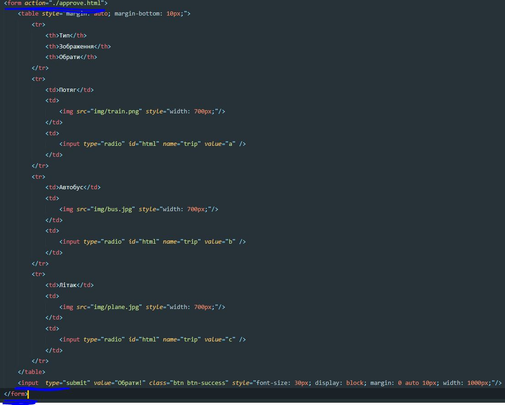

Лємєшова С. С,
Лємєшова С. С,  Тітов Є. О,
Тітов Є. О,  Юдаков О. С.
Юдаков О. С. 
ЛАБОРАТОРНА РОБОТА №1
Опис предметного середовища: Предметною областю є пересування Україною за допомогою різноманітних транспортів. UkrAbobus – створений нами застосунок, який дозволяє максимально спростити вашу подорож. Користувач в змозі обрати зручний для нього засіб пересування, комфортний час та маршрут. Перевага нашого застосунку полягає в комфортності та універсальності.
Даний WEB-додаток дозволяє користувачам придбати квитки на зручний їм транспорт для здійснення подорожі по Україні. На вибір користувача є три транспорти: потяг, літак та автобус. На одному сайті Ви можете подивитись розклад для всіх цих типів транспортів та обрати найзручніший саме Вам.Застосунок має наступний функціонал: перегляд розкладу потягів, автобусів та літаків придбання квитків
- Перегляд розкладу:
- Потягів
- Літаків
- Автобусів
- Придбання квитків:
- На потяг
- На літак
- На автобус
Тема: структура html-документа. вибір предметного галузі.
Мета: придбати практичні навички роботи з HTML-документом, таблицями,формами, зображеннями, посиланнями. Створити шаблон звітного HTML-документом для відображення результатів роботи всіх лабораторних робіт.
Розташування лабораторної: GitHub Лабороторна робота №1
Cтруктура документа:
Скриншот таблиці
Код форми:

Cкриншот форми:
Код зображення:
Cкриншот зображення:
Висновки: Протягом цієї лабораторної роботи ми придбали практичні навички роботи з HTML-документом, навчилися створювати таблиці, форми, та вставляти картинки і посилання